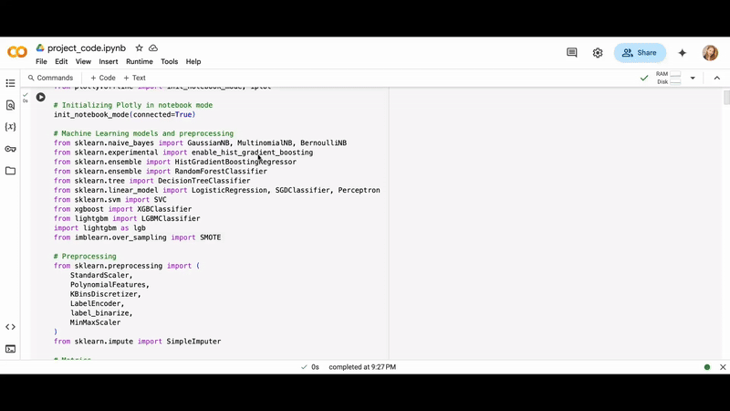
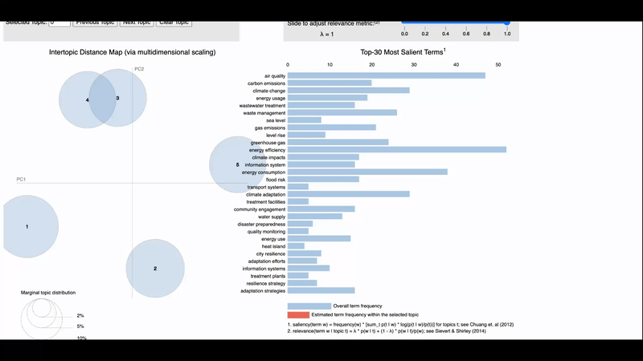

Thank you for visiting my portfolio website :)
My name is Alina Kapanova and I am a Master's student at Cornell Tech, Cornell University studying Information Systems.
I have BSc in Computer Science (honors) from New York University.
I am looking for Software Engineering, Data Science, ML and related job opportunities in the US. I have previous Software Engineer work experience at Amazon.com, MLE experience at Anote and research experience in Computer Science, ML and other related fields at Cornell and NYU.
In my free time, I love traveling, going to the gym, exploring different cuisines, art and hanging with my cats :)
Cornell University, Cornell Tech, New York, USA | Expected graduation: May 2027
Master of Science in Information Systems and Technology | GPA: 3.92
Relevant courses: Applied Machine Learning, Machine Learning Engineering, Algorithms, Privacy in the Context | GPA: 3.92
New York University, New York, USA (09/2022)
Bachelor of Science in Computer Science | GPA: 3.84
Honors: Magna Cum Laude (top 10%) honors, Founders Day Award, NYU Futures merit scholarship (42k).
Relevant CS courses at NYU New York: Operating Systems, Data Structures, Discrete Math, NLP, Agile Software Development, Computer Vision, Intro to Web Design, Algorithms
Relevant CS courses at NYU AD: Comp Systems Organization
Relevant CS courses at NYU Shanghai: Statistics
Machine Learning Engineer Intern, Anote (05/2025 - 08/2025)
- Developed a synthetic video generation algorithm using Python, Replicate API, researched current methods and approaches to synthetic training data generation
Graduate Teaching Assistant, Cornell University (09/2024 - Present)
- Graded homeworks, guided students through assignments in Healthcare Data Management, Data Management classes.
Graduate Research Assistant, Cornell Tech, Cornell University (09/2023 - 12/2023, 09/2024 - Present)
- Assisted at the Urban Tech Hub in research at the intersection of Urban and Computer Science. Developed Python scripts to evaluate LLM model performance and implemented topic modeling for an urban systems project.
Software Development Engineer, Amazon, Dublin, Ireland (06/2022 - 02/2023)
- Created and deployed a Java package to validate missing production environments for crucial data pipelines to reduce the number of related tickets by 35%.
- Deployed MemDS service to three new commercial regions, interacting with stakeholders across the USA and India offices, resolving tickets, making and verifying code changes
Software Engineering Intern, QBS System Limited, Hong Kong (07/2021 - 10/2021)
- Developed a web-based code editor for an educational kid’s game, adding syntax highlighting and code compiling features.
Software Engineer Intern, Agritecture Consulting (03/2020 - 05/2020)
- Built Daily Light integral Calculator (DLI) web app using JavaScript, Google’s Geocoding, Maps API. The app calculates average monthly DLI values for any location, retrieves geocoding info, computes DLI in 6 steps. The app was hosted the company website.
Data Analyst Intern, Agritecture Consulting (03/2020 - 05/2020)
- Analyzed socio-economic, financial trends from the USDA Census of Agriculture, compiled a statistical report and assisted in computing capital, operational costs for an international client. Assisted with IT related issues for the Firebase db using Google Script.
Predict Graduate Student retention using Machine Learning, Cornell University (10/2024 - 12/2024)
Developed a machine learning framework to predict student dropout risk using demographic, socioeconomic, and academic data. Employed models such as logistic regression and random forests, achieving 79.27% accuracy after applying SMOTE for class balancing. Conducted feature engineering to analyze key predictors, including tuition status and curricular unit performance, providing actionable insights for early intervention strategies to improve retention rates.
Project website: https://github.com/alinak78/graduate-retention-machine-learning/tree/main
Analyze Climate Resilience strategies using Natural Language Processing (Topic Modeling), Cornell University, UT Hub (09/2023 - 12/2023)
Developed a natural language processing (NLP) tool to analyze climate adaptation solutions in alignment with the Toronto Resilience Strategy, which aims to help the city survive, adapt, and thrive in the face of climate change and socioeconomic inequities. Implemented topic modeling with Latent Dirichlet Allocation (LDA) and bigram analysis using Python libraries such as NLTK, Sklearn, and Gensim. Extracted key themes related to equity, infrastructure resilience, and climate adaptation, generating interactive visualizations for exploring prevalent topics and informing policy insights.
Project website: https://github.com/alinak78/resilience-project/tree/main
CrashSimulator, Secure Systems Lab at NYU Tandon (01/2021 - 03/2022)
Developed a software tool identifying vulnerabilities in product designs. Conducted a network performance study using C and strace, increasing test coverage for posix-omni-parser from 71% to 95%.
Project website: https://ssl.engineering.nyu.edu/projects#CrashSimulator
Named Entity Recognition ML Pipeline, Opengulf Lab at NYU Abu Dhabi and Stanford (05/2021 - 02/2022)
Implemented a custom NER ML model in Python using SpaCy’s LSTM architecture, adding features for historical name classifications. Published at Digital Humanities Conference 2022.
Lab website: https://cesta.stanford.edu/research/opengulf
Machine Learning, Software Engineering, Full-stack development, Unit Testing, Data Analysis, Deep Learning, LLMs, Named Entity Recognition, MongoDB, ReactJS, SpaCy, Pytorch, ArcGIS, NodeJS, ExpressJS, Java, Python, JavaScript, C, C++.
New York University Undergraduate merit scholarship (42k USD), merit scholarship renewed annually based on satisfactory academic performance.
New York University Magna Cum Laude Latin Honors, 2022, top 10% of graduates based on GPA, completion of required CS courses
NYU Tandon’s Undergraduate Summer Research Program, 2021, selective research program for NYU undergraduates
NYU AD Visiting Summer Research Program, Remote, 2021, selective research program for visiting NYU undergraduates
TavTech Cybersecurity Fellowship, Tel-Aviv, Israel, December 2019-January 2020, selective Cybersecurity program sponsored by NYU Bronfman Center for Jewish Student Life. The program included studying cybersecurity topics, exploring Tel-Aviv
Grace Hopper EMEA Scholar (2021), Grace Hopper Scholarship by AccessStem (2020), Anita Borg student scholarshi (EMEA) and AccessStem scholarship to attend the largest conference for women in tech
Get Ahead Scholar (2021), Google, selective invite-only mentorship program for underrepresented groups in tech. The program involved coding assessments, mentorship from Google engineers
Extracurricular Activities
Student Ambassador, Cornell Tech (01/2025 - 05/2025)
Support incoming students by providing guidance and organizing events.
Treasurer of Cornell's KZ club, Cornell University (08/2024 - 11/2024)
Organized speaker events with Kazakh engineers from Amazon, Meta, and other cultural events
Learning Assistant (Teaching Assistant), NYU Shanghai (01/2021 - 05/2021)
- Supported course "Introduction to Macroeconomics" (in English) taught by A. Stojanovic, answered students' questions about course content, homeworks, organized exam review sessions, worked with faculty to support student learning experience.
Russian, Native | English, Fluent | Kazakh, Upper-intermediate | French, Elementary | Mandarin, Elementary
Test scores and other activities
SAT Reasoning, 2240/2400, 98.9 percentile, 2016
IELTS 8.5/9.0, "Very good user of English", 2022
United National Test 122/125
High School GPA 5.0/5.0